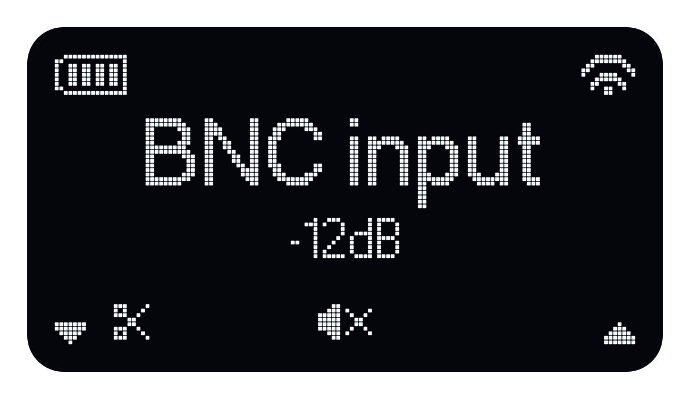
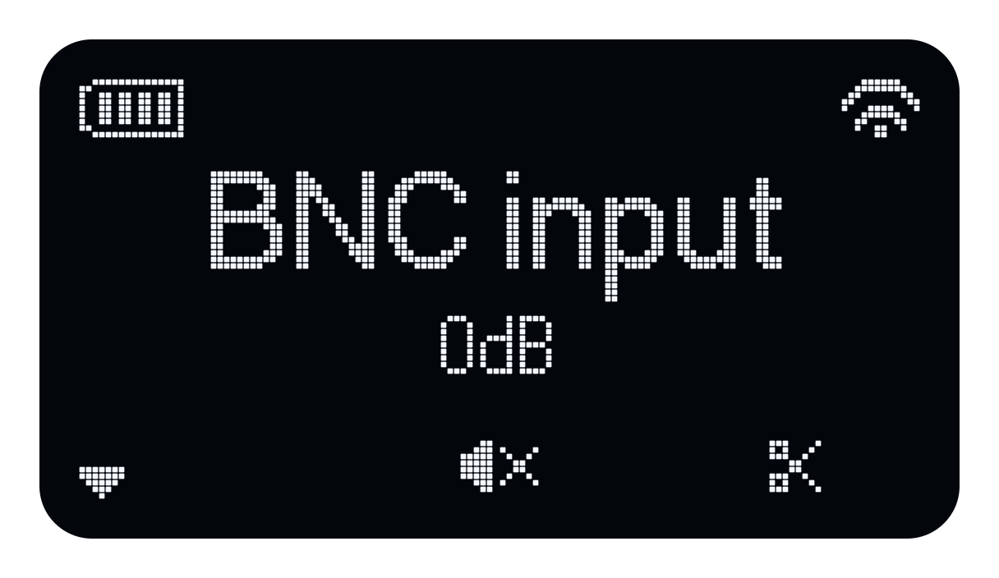
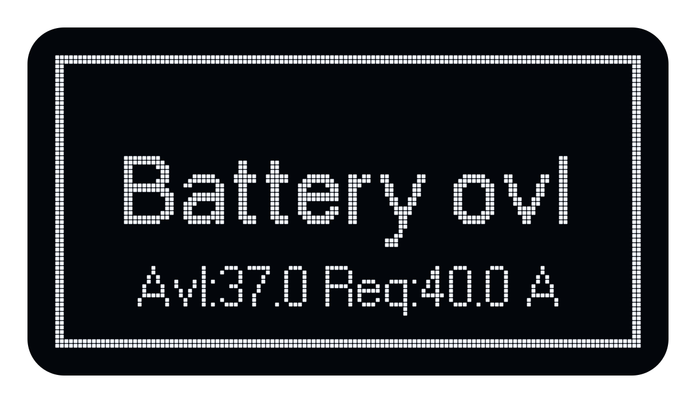
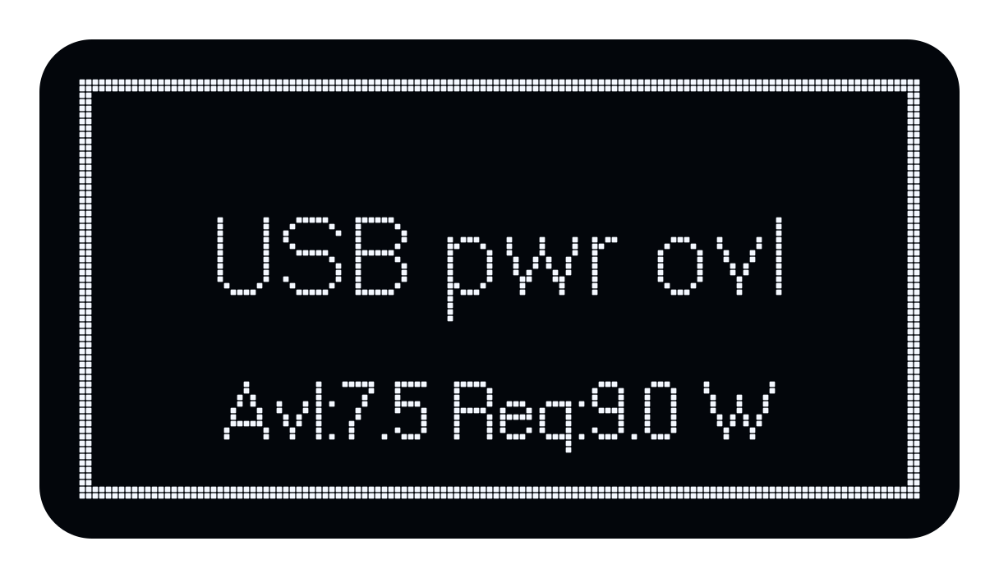

Signal Setup
For step-by-step instructions on selecting and playing a signal, see Quick Start.
On this page
Available signal sources
BA means building acoustics; RA means room acoustics. The names below match the Atlas display.
| Signal | Description |
|---|---|
| MLS-BA / MLS-RA | White maximum-length sequence for building or room acoustics. |
| PMLS-BA / PMLS-RA | Pink maximum-length sequence for building or room acoustics. |
| ESWP-BA / ESWP-RA | Exponential sweep for building or room acoustics. |
| LSWP-BA | Linear sweep for building acoustics. |
| EqMLS-BA | Equalized maximum-length sequence for building acoustics. |
| User | A signal uploaded by the user to internal storage. |
| BNC input | External signal input. |
Playback modes
Room-acoustics signals offer Continuous and Intermittent playback. Building-acoustics signals play continuously.
| Mode | Description |
|---|---|
| Continuous | The signal repeats continuously. |
| Intermittent | Signal playback alternates with an equally long silence. |
Sequence duration
The stimulus length is the duration of the signal within one sequence; the measurement length is one complete period. In Intermittent mode, a period includes the stimulus and an equally long silence. Times are rounded and exclude soundfield buildup and any additional recording time.
| Signal | Mode | Stimulus length | Measurement length (one period) |
|---|---|---|---|
| MLS-BA, PMLS-BA, ESWP-BA, LSWP-BA | Continuous | 5.5, 11 or 22 s | 5.5, 11 or 22 s, respectively |
| EqMLS-BA | Continuous | 11 s | 11 s |
| MLS-RA, PMLS-RA, ESWP-RA | Continuous | 5.5, 11 or 22 s | 5.5, 11 or 22 s, respectively |
| MLS-RA, PMLS-RA, ESWP-RA | Intermittent | 5.5, 11 or 22 s | 11, 22 or 44 s, respectively |
Soundfield buildup: For impulse response measurements, DiracMobile can play the stimulus before recording to allow the soundfield to build up. This time is additional to the sequence period.
User and BNC input do not use the sequence-length setting.
Signal level
Atlas uses a gain setting from −60 to 0 dB for all signal sources, rather than a calibrated sound pressure level. The resulting acoustic level depends on the signal and measurement conditions.
Power limits and warnings
The usable signal gain depends on the signal peaks, the remaining battery energy and the power available from the USB supply. Lowering the gain reduces the load, but input clipping must be corrected at the external source.
For stored signals, Atlas checks the expected power demand before starting playback and when changing the gain. If the requested gain exceeds the available power, a warning is displayed and playback may be prevented. The level of an external BNC signal is not known in advance, so its source level must also be controlled.
Atlas enables high-power mode when the connected USB-PD supply provides at least 45 W. The + indicator shows that this mode is available. During playback, press L to decrease the gain or R to increase it. The up arrow disappears when the gain cannot be increased further. Press M to stop playback and return home.
In a full-screen power warning, Avl identifies the available amount and Req the required amount. Press any button to return to the home screen, correct the cause and try again.
The following illustrations reproduce the display layout with example readings; the numbers are not fixed limits.
ADC overload (ADCO)
The external BNC input reaches the analogue-to-digital converter's full-scale limit and clips. The input clip indicator appears near the lower left of the home screen. Reduce the level of the external source; lowering Atlas's output gain does not remove distortion that has already occurred at the input.

DAC overload (DACO)
The signal peaks exceed the output stage's limit. The clipping threshold depends on the power mode: in high-power mode it is at digital full scale; in the lower-power mode the output can overload before digital full scale is reached. The output clip indicator appears near the lower right of the home screen. Reduce the signal gain; for an external signal, reducing its source level also helps.

Battery remaining energy overload (BREO)
With no USB supply attached, the remaining battery energy is insufficient to run the chosen signal for the minimum operating time. Atlas displays Battery low. Lower the gain, recharge the battery or connect a suitable USB supply.

Battery peak current overload (BPCO)
With no USB supply attached, the signal peaks would draw more current than the battery protection allows. Atlas displays Battery ovl. This can occur even when the battery has plenty of charge. Reduce the gain or use a suitable USB supply.

USB average power overload (UAPO)
The average power required by Atlas and the selected signal exceeds the power available from the connected USB supply. Atlas displays USB pwr ovl. Reduce the gain or use a USB supply and cable capable of delivering more power. The available power depends on the connection negotiated with the supply.
USB peak current overload (UPCO)
The signal peaks demand more current than the USB supply can sustain, even if its average power rating appears sufficient. The height and duration of the peaks matter. User signals with a high crest factor (large peaks relative to their average level) are particularly demanding. Reduce the gain or use a signal with smaller peaks.
Both USB overload conditions use the USB pwr ovl message:

If the USB supply disconnects during playback, Atlas stops the output. Reconnect a suitable supply and check the gain before restarting playback.